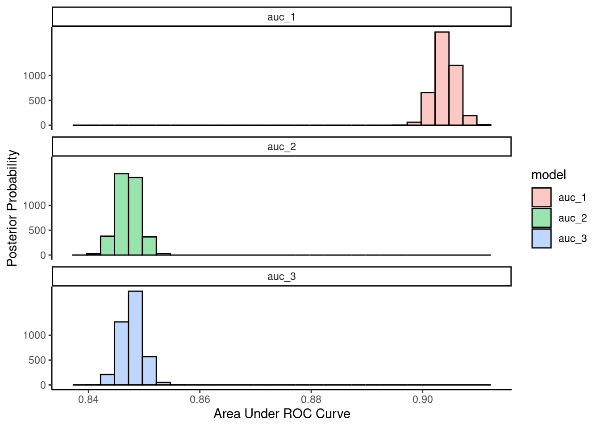

library(tidyverse)
library(tidymodels)
library(tidyposterior)
library(rstanarm)2 Bayesian Analyses with rstanarm
2.1 Set up packages and fake data
Make fake data
set.seed(123456)
auc <- tibble(repeat_id = rep(1:3, each = 10),
fold_id = rep(1:10, times = 3),
auc_1 = rnorm(30, .90, .01),
auc_2 = rnorm(30, .85, .01),
auc_3 = rnorm(30, .85, .01)) |> print()# A tibble: 30 × 5
repeat_id fold_id auc_1 auc_2 auc_3
<int> <int> <dbl> <dbl> <dbl>
1 1 1 0.908 0.841 0.844
2 1 2 0.897 0.851 0.853
3 1 3 0.896 0.840 0.851
4 1 4 0.901 0.823 0.842
5 1 5 0.923 0.839 0.856
6 1 6 0.908 0.841 0.848
7 1 7 0.913 0.866 0.848
8 1 8 0.925 0.860 0.850
9 1 9 0.912 0.860 0.845
10 1 10 0.896 0.839 0.843
# ℹ 20 more rows2.2 Background reading
- Read help for
perf_mod() - Read help for
stan_glmer() - https://www.tmwr.org/compare
- https://mc-stan.org/users/documentation/
- https://mc-stan.org/rstanarm/articles/
- https://mc-stan.org/rstanarm/articles/rstanarm.html
- https://mc-stan.org/rstanarm/articles/priors.html
- https://mc-stan.org/rstanarm/articles/continuous.html
- https://www.andrewheiss.com/blog/2022/09/26/guide-visualizing-types-posteriors/
2.3 Tidymodels approach
Uses perf_mod() from tidyposterior
- Two random intercept terms are used; one for the repeat and another for the fold within repeat. These also have exchangeable correlation structures.
- When the argument
hetero_var = TRUE, the variance structure uses random intercepts for each model term. Use this formula too?statistic ~ model + (model + 0| id2/id) - Notice dials and knobs to consider in comments
set.seed(101)
pp <- auc |>
rename(id = repeat_id,
id2 = fold_id) |>
perf_mod(formula = statistic ~ model + (1 | id2/id),
# prior_intercept = rstanarm::student_t(autoscale = TRUE),
# prior = rstanarm::student_t(autoscale = TRUE),
# hetero_var = TRUE,
# transform = tidyposterior::logit_trans, # for skewed & bounded AUC
iter = 2000, chains = 4, # defaults listed here for easy increase
adapt_delta = .80, # default = .80. Increase to < 1
# cores = 4, seed = 12345,
family = gaussian,
)
SAMPLING FOR MODEL 'continuous' NOW (CHAIN 1).
Chain 1:
Chain 1: Gradient evaluation took 4e-05 seconds
Chain 1: 1000 transitions using 10 leapfrog steps per transition would take 0.4 seconds.
Chain 1: Adjust your expectations accordingly!
Chain 1:
Chain 1:
Chain 1: Iteration: 1 / 2000 [ 0%] (Warmup)
Chain 1: Iteration: 200 / 2000 [ 10%] (Warmup)
Chain 1: Iteration: 400 / 2000 [ 20%] (Warmup)
Chain 1: Iteration: 600 / 2000 [ 30%] (Warmup)
Chain 1: Iteration: 800 / 2000 [ 40%] (Warmup)
Chain 1: Iteration: 1000 / 2000 [ 50%] (Warmup)
Chain 1: Iteration: 1001 / 2000 [ 50%] (Sampling)
Chain 1: Iteration: 1200 / 2000 [ 60%] (Sampling)
Chain 1: Iteration: 1400 / 2000 [ 70%] (Sampling)
Chain 1: Iteration: 1600 / 2000 [ 80%] (Sampling)
Chain 1: Iteration: 1800 / 2000 [ 90%] (Sampling)
Chain 1: Iteration: 2000 / 2000 [100%] (Sampling)
Chain 1:
Chain 1: Elapsed Time: 5.477 seconds (Warm-up)
Chain 1: 0.329 seconds (Sampling)
Chain 1: 5.806 seconds (Total)
Chain 1:
SAMPLING FOR MODEL 'continuous' NOW (CHAIN 2).
Chain 2:
Chain 2: Gradient evaluation took 1.8e-05 seconds
Chain 2: 1000 transitions using 10 leapfrog steps per transition would take 0.18 seconds.
Chain 2: Adjust your expectations accordingly!
Chain 2:
Chain 2:
Chain 2: Iteration: 1 / 2000 [ 0%] (Warmup)
Chain 2: Iteration: 200 / 2000 [ 10%] (Warmup)
Chain 2: Iteration: 400 / 2000 [ 20%] (Warmup)
Chain 2: Iteration: 600 / 2000 [ 30%] (Warmup)
Chain 2: Iteration: 800 / 2000 [ 40%] (Warmup)
Chain 2: Iteration: 1000 / 2000 [ 50%] (Warmup)
Chain 2: Iteration: 1001 / 2000 [ 50%] (Sampling)
Chain 2: Iteration: 1200 / 2000 [ 60%] (Sampling)
Chain 2: Iteration: 1400 / 2000 [ 70%] (Sampling)
Chain 2: Iteration: 1600 / 2000 [ 80%] (Sampling)
Chain 2: Iteration: 1800 / 2000 [ 90%] (Sampling)
Chain 2: Iteration: 2000 / 2000 [100%] (Sampling)
Chain 2:
Chain 2: Elapsed Time: 5.015 seconds (Warm-up)
Chain 2: 0.442 seconds (Sampling)
Chain 2: 5.457 seconds (Total)
Chain 2:
SAMPLING FOR MODEL 'continuous' NOW (CHAIN 3).
Chain 3:
Chain 3: Gradient evaluation took 1.8e-05 seconds
Chain 3: 1000 transitions using 10 leapfrog steps per transition would take 0.18 seconds.
Chain 3: Adjust your expectations accordingly!
Chain 3:
Chain 3:
Chain 3: Iteration: 1 / 2000 [ 0%] (Warmup)
Chain 3: Iteration: 200 / 2000 [ 10%] (Warmup)
Chain 3: Iteration: 400 / 2000 [ 20%] (Warmup)
Chain 3: Iteration: 600 / 2000 [ 30%] (Warmup)
Chain 3: Iteration: 800 / 2000 [ 40%] (Warmup)
Chain 3: Iteration: 1000 / 2000 [ 50%] (Warmup)
Chain 3: Iteration: 1001 / 2000 [ 50%] (Sampling)
Chain 3: Iteration: 1200 / 2000 [ 60%] (Sampling)
Chain 3: Iteration: 1400 / 2000 [ 70%] (Sampling)
Chain 3: Iteration: 1600 / 2000 [ 80%] (Sampling)
Chain 3: Iteration: 1800 / 2000 [ 90%] (Sampling)
Chain 3: Iteration: 2000 / 2000 [100%] (Sampling)
Chain 3:
Chain 3: Elapsed Time: 6.216 seconds (Warm-up)
Chain 3: 0.35 seconds (Sampling)
Chain 3: 6.566 seconds (Total)
Chain 3:
SAMPLING FOR MODEL 'continuous' NOW (CHAIN 4).
Chain 4:
Chain 4: Gradient evaluation took 2.1e-05 seconds
Chain 4: 1000 transitions using 10 leapfrog steps per transition would take 0.21 seconds.
Chain 4: Adjust your expectations accordingly!
Chain 4:
Chain 4:
Chain 4: Iteration: 1 / 2000 [ 0%] (Warmup)
Chain 4: Iteration: 200 / 2000 [ 10%] (Warmup)
Chain 4: Iteration: 400 / 2000 [ 20%] (Warmup)
Chain 4: Iteration: 600 / 2000 [ 30%] (Warmup)
Chain 4: Iteration: 800 / 2000 [ 40%] (Warmup)
Chain 4: Iteration: 1000 / 2000 [ 50%] (Warmup)
Chain 4: Iteration: 1001 / 2000 [ 50%] (Sampling)
Chain 4: Iteration: 1200 / 2000 [ 60%] (Sampling)
Chain 4: Iteration: 1400 / 2000 [ 70%] (Sampling)
Chain 4: Iteration: 1600 / 2000 [ 80%] (Sampling)
Chain 4: Iteration: 1800 / 2000 [ 90%] (Sampling)
Chain 4: Iteration: 2000 / 2000 [100%] (Sampling)
Chain 4:
Chain 4: Elapsed Time: 6.377 seconds (Warm-up)
Chain 4: 0.421 seconds (Sampling)
Chain 4: 6.798 seconds (Total)
Chain 4: Model coefficients
pp$stan |> summary(pars = c("modelauc_2", "modelauc_3"),
probs = c(0.025, 0.975),
digits = 2)
Model Info:
function: stan_glmer
family: gaussian [identity]
formula: statistic ~ model + (1 | id2/id)
algorithm: sampling
sample: 4000 (posterior sample size)
priors: see help('prior_summary')
observations: 90
groups: id:id2 (30), id2 (10)
Estimates:
mean sd 2.5% 97.5%
modelauc_2 -0.06 0.00 -0.06 -0.05
modelauc_3 -0.06 0.00 -0.06 -0.05
MCMC diagnostics
mcse Rhat n_eff
modelauc_2 0.00 1.00 4860
modelauc_3 0.00 1.00 4400
For each parameter, mcse is Monte Carlo standard error, n_eff is a crude measure of effective sample size, and Rhat is the potential scale reduction factor on split chains (at convergence Rhat=1).To get info on priors selected
rstanarm::prior_summary(pp$stan)Priors for model 'pp$stan'
------
Intercept (after predictors centered)
Specified prior:
~ normal(location = 0.87, scale = 2.5)
Adjusted prior:
~ normal(location = 0.87, scale = 0.071)
Coefficients
Specified prior:
~ normal(location = [0,0], scale = [2.5,2.5])
Adjusted prior:
~ normal(location = [0,0], scale = [0.15,0.15])
Auxiliary (sigma)
Specified prior:
~ exponential(rate = 1)
Adjusted prior:
~ exponential(rate = 35)
Covariance
~ decov(reg. = 1, conc. = 1, shape = 1, scale = 1)
------
See help('prior_summary.stanreg') for more detailsFor diagnostics
# shinystan::launch_shinystan(pp$stan)CIs for each model
pp_tidy <- pp %>%
tidy(seed = 123)
q = c(.025, .5, .975)
pp_tidy %>%
group_by(model) %>%
summarize(mean = mean(posterior),
median = quantile(posterior, probs = q[2]),
lower = quantile(posterior, probs = q[1]),
upper = quantile(posterior, probs = q[3])) |>
mutate(model = factor(model, levels = c("auc_1", "auc_2", "auc_3"))) |>
arrange(model)# A tibble: 3 × 5
model mean median lower upper
<fct> <dbl> <dbl> <dbl> <dbl>
1 auc_1 0.904 0.904 0.900 0.908
2 auc_2 0.847 0.847 0.843 0.851
3 auc_3 0.848 0.848 0.844 0.852Model contrasts
pp_contrasts <- contrast_models(pp,
list("auc_1","auc_1", "auc_2"),
list("auc_2", "auc_3", "auc_3"))Do contrasts with ROPE
- use +- .01 for ROPE
- 95% CI
summary(pp_contrasts, size = .01, prob = 0.95)# A tibble: 3 × 9
contrast probability mean lower upper size pract_neg pract_equiv
<chr> <dbl> <dbl> <dbl> <dbl> <dbl> <dbl> <dbl>
1 auc_1 vs au… 1 5.69e-2 0.0522 0.0617 0.01 0 0
2 auc_1 vs au… 1 5.63e-2 0.0514 0.0610 0.01 0 0
3 auc_2 vs au… 0.394 -6.41e-4 -0.00537 0.00403 0.01 0 1.00
# ℹ 1 more variable: pract_pos <dbl>Directional contrast (vs 0)
- set size = 0
summary(pp_contrasts, size = 0, prob = 0.95)# A tibble: 3 × 9
contrast probability mean lower upper size pract_neg pract_equiv
<chr> <dbl> <dbl> <dbl> <dbl> <dbl> <dbl> <dbl>
1 auc_1 vs au… 1 5.69e-2 0.0522 0.0617 0 NA NA
2 auc_1 vs au… 1 5.63e-2 0.0514 0.0610 0 NA NA
3 auc_2 vs au… 0.394 -6.41e-4 -0.00537 0.00403 0 NA NA
# ℹ 1 more variable: pract_pos <dbl>Here is the more “manual” method. Useful for understanding.
pp_contrasts |>
filter(contrast == "auc_1 vs. auc_2") |>
mutate(auc1_gt_auc2 = if_else(difference > 0, 1, 0)) |>
pull(auc1_gt_auc2) |>
mean()[1] 1pp_contrasts |>
filter(contrast == "auc_1 vs. auc_3") |>
mutate(auc1_gt_auc3 = if_else(difference > 0, 1, 0)) |>
pull(auc1_gt_auc3) |>
mean()[1] 1pp_contrasts |>
filter(contrast == "auc_2 vs. auc_3") |>
mutate(auc2_gt_auc3 = if_else(difference > 0, 1, 0)) |>
pull(auc2_gt_auc3) |>
mean()[1] 0.394Plots
theme_set(theme_classic())
pp_tidy %>%
mutate(model = factor(model, levels = c("auc_1", "auc_2", "auc_3"))) %>%
ggplot() +
geom_histogram(aes(x = posterior, fill = model), color = "black", alpha = .4,
bins = 30) +
facet_wrap(~model, ncol = 1) +
scale_y_continuous("Posterior Probability", breaks = c(0, 500, 1000)) +
# ylab("Posterior Probability Density") +
xlab("Area Under ROC Curve")
2.4 Directly with STAN
Pivot data to long format
auc_long <- auc |>
pivot_longer(
cols = starts_with("auc_"),
names_to = "model",
values_to = "auc") |>
rename(id = repeat_id,
id2 = fold_id) |>
mutate(model_2 = if_else(model == "auc_2", 1, 0),
model_3 = if_else(model == "auc_3", 1, 0),
model = fct(model, levels = c("auc_1", "auc_2", "auc_3")))
auc_long |> head()# A tibble: 6 × 6
id id2 model auc model_2 model_3
<int> <int> <fct> <dbl> <dbl> <dbl>
1 1 1 auc_1 0.908 0 0
2 1 1 auc_2 0.841 1 0
3 1 1 auc_3 0.844 0 1
4 1 2 auc_1 0.897 0 0
5 1 2 auc_2 0.851 1 0
6 1 2 auc_3 0.853 0 1Fix model directly with stan_glmer()
set.seed(101)
pp2 <- auc_long |>
stan_glmer(data = _,
formula = auc ~ model_2 + model_3 + (1 | id2/id),
# prior_intercept = rstanarm::student_t(autoscale = TRUE),
# prior = rstanarm::student_t(autoscale = TRUE),
# hetero_var = TRUE,
# transform = tidyposterior::logit_trans, # for skewed & bounded AUC
iter = 2000, chains = 4, # defaults listed here for easy increase
adapt_delta = .80, # default = .80. Increase to < 1
# cores = 4, seed = 12345,
family = gaussian,
)
SAMPLING FOR MODEL 'continuous' NOW (CHAIN 1).
Chain 1:
Chain 1: Gradient evaluation took 3.1e-05 seconds
Chain 1: 1000 transitions using 10 leapfrog steps per transition would take 0.31 seconds.
Chain 1: Adjust your expectations accordingly!
Chain 1:
Chain 1:
Chain 1: Iteration: 1 / 2000 [ 0%] (Warmup)
Chain 1: Iteration: 200 / 2000 [ 10%] (Warmup)
Chain 1: Iteration: 400 / 2000 [ 20%] (Warmup)
Chain 1: Iteration: 600 / 2000 [ 30%] (Warmup)
Chain 1: Iteration: 800 / 2000 [ 40%] (Warmup)
Chain 1: Iteration: 1000 / 2000 [ 50%] (Warmup)
Chain 1: Iteration: 1001 / 2000 [ 50%] (Sampling)
Chain 1: Iteration: 1200 / 2000 [ 60%] (Sampling)
Chain 1: Iteration: 1400 / 2000 [ 70%] (Sampling)
Chain 1: Iteration: 1600 / 2000 [ 80%] (Sampling)
Chain 1: Iteration: 1800 / 2000 [ 90%] (Sampling)
Chain 1: Iteration: 2000 / 2000 [100%] (Sampling)
Chain 1:
Chain 1: Elapsed Time: 5.208 seconds (Warm-up)
Chain 1: 0.33 seconds (Sampling)
Chain 1: 5.538 seconds (Total)
Chain 1:
SAMPLING FOR MODEL 'continuous' NOW (CHAIN 2).
Chain 2:
Chain 2: Gradient evaluation took 1.7e-05 seconds
Chain 2: 1000 transitions using 10 leapfrog steps per transition would take 0.17 seconds.
Chain 2: Adjust your expectations accordingly!
Chain 2:
Chain 2:
Chain 2: Iteration: 1 / 2000 [ 0%] (Warmup)
Chain 2: Iteration: 200 / 2000 [ 10%] (Warmup)
Chain 2: Iteration: 400 / 2000 [ 20%] (Warmup)
Chain 2: Iteration: 600 / 2000 [ 30%] (Warmup)
Chain 2: Iteration: 800 / 2000 [ 40%] (Warmup)
Chain 2: Iteration: 1000 / 2000 [ 50%] (Warmup)
Chain 2: Iteration: 1001 / 2000 [ 50%] (Sampling)
Chain 2: Iteration: 1200 / 2000 [ 60%] (Sampling)
Chain 2: Iteration: 1400 / 2000 [ 70%] (Sampling)
Chain 2: Iteration: 1600 / 2000 [ 80%] (Sampling)
Chain 2: Iteration: 1800 / 2000 [ 90%] (Sampling)
Chain 2: Iteration: 2000 / 2000 [100%] (Sampling)
Chain 2:
Chain 2: Elapsed Time: 4.513 seconds (Warm-up)
Chain 2: 0.393 seconds (Sampling)
Chain 2: 4.906 seconds (Total)
Chain 2:
SAMPLING FOR MODEL 'continuous' NOW (CHAIN 3).
Chain 3:
Chain 3: Gradient evaluation took 1.8e-05 seconds
Chain 3: 1000 transitions using 10 leapfrog steps per transition would take 0.18 seconds.
Chain 3: Adjust your expectations accordingly!
Chain 3:
Chain 3:
Chain 3: Iteration: 1 / 2000 [ 0%] (Warmup)
Chain 3: Iteration: 200 / 2000 [ 10%] (Warmup)
Chain 3: Iteration: 400 / 2000 [ 20%] (Warmup)
Chain 3: Iteration: 600 / 2000 [ 30%] (Warmup)
Chain 3: Iteration: 800 / 2000 [ 40%] (Warmup)
Chain 3: Iteration: 1000 / 2000 [ 50%] (Warmup)
Chain 3: Iteration: 1001 / 2000 [ 50%] (Sampling)
Chain 3: Iteration: 1200 / 2000 [ 60%] (Sampling)
Chain 3: Iteration: 1400 / 2000 [ 70%] (Sampling)
Chain 3: Iteration: 1600 / 2000 [ 80%] (Sampling)
Chain 3: Iteration: 1800 / 2000 [ 90%] (Sampling)
Chain 3: Iteration: 2000 / 2000 [100%] (Sampling)
Chain 3:
Chain 3: Elapsed Time: 4.822 seconds (Warm-up)
Chain 3: 0.303 seconds (Sampling)
Chain 3: 5.125 seconds (Total)
Chain 3:
SAMPLING FOR MODEL 'continuous' NOW (CHAIN 4).
Chain 4:
Chain 4: Gradient evaluation took 1.8e-05 seconds
Chain 4: 1000 transitions using 10 leapfrog steps per transition would take 0.18 seconds.
Chain 4: Adjust your expectations accordingly!
Chain 4:
Chain 4:
Chain 4: Iteration: 1 / 2000 [ 0%] (Warmup)
Chain 4: Iteration: 200 / 2000 [ 10%] (Warmup)
Chain 4: Iteration: 400 / 2000 [ 20%] (Warmup)
Chain 4: Iteration: 600 / 2000 [ 30%] (Warmup)
Chain 4: Iteration: 800 / 2000 [ 40%] (Warmup)
Chain 4: Iteration: 1000 / 2000 [ 50%] (Warmup)
Chain 4: Iteration: 1001 / 2000 [ 50%] (Sampling)
Chain 4: Iteration: 1200 / 2000 [ 60%] (Sampling)
Chain 4: Iteration: 1400 / 2000 [ 70%] (Sampling)
Chain 4: Iteration: 1600 / 2000 [ 80%] (Sampling)
Chain 4: Iteration: 1800 / 2000 [ 90%] (Sampling)
Chain 4: Iteration: 2000 / 2000 [100%] (Sampling)
Chain 4:
Chain 4: Elapsed Time: 5.049 seconds (Warm-up)
Chain 4: 0.393 seconds (Sampling)
Chain 4: 5.442 seconds (Total)
Chain 4: Make new data for posterior prediction
new_dat2 <- tibble(id = c(1,1,1), id2 = c(1,1,1),
model_2 = c(0,1,0),
model_3 = c(0,0,1))
new_dat2 |> print(n = 3)# A tibble: 3 × 4
id id2 model_2 model_3
<dbl> <dbl> <dbl> <dbl>
1 1 1 0 0
2 1 1 1 0
3 1 1 0 1pp2_tidy <- posterior_epred(pp2, newdata = new_dat2, seed = 123, re.form = NA) |>
as_tibble()
names(pp2_tidy) <- c("auc_1", "auc_2", "auc_3")
pp2_tidy <- pp2_tidy |>
pivot_longer(everything(), names_to = "model", values_to = "posterior")
class(pp2_tidy) <- c("posterior", class(pp2_tidy))Compare
pp_tidy |> head()# Posterior samples of performance
# A tibble: 6 × 2
model posterior
<chr> <dbl>
1 auc_1 0.903
2 auc_2 0.845
3 auc_3 0.849
4 auc_1 0.903
5 auc_2 0.849
6 auc_3 0.846pp2_tidy |> head()# Posterior samples of performance
# A tibble: 6 × 2
model posterior
<chr> <dbl>
1 auc_1 0.903
2 auc_2 0.845
3 auc_3 0.849
4 auc_1 0.903
5 auc_2 0.849
6 auc_3 0.8462.5 Transformations
Can use transformations in tidyposterior package
tidyposterior::logit_trans is useful for auROC
- apply transform to raw data (auROCs) -
logit_trans$func() - fit model
- get posterior
- apply inverse transform to posterior -
logit_trans$inv()